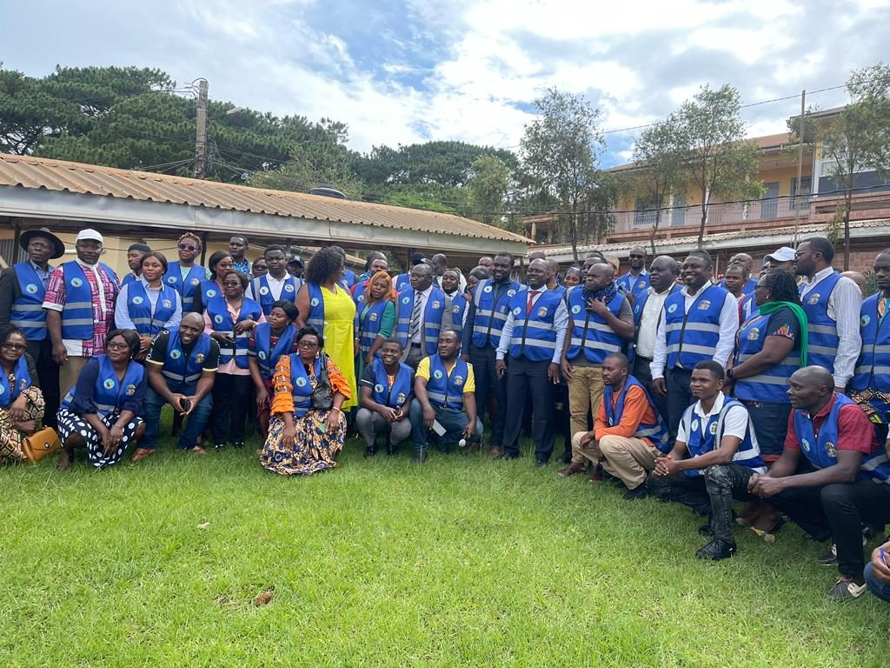
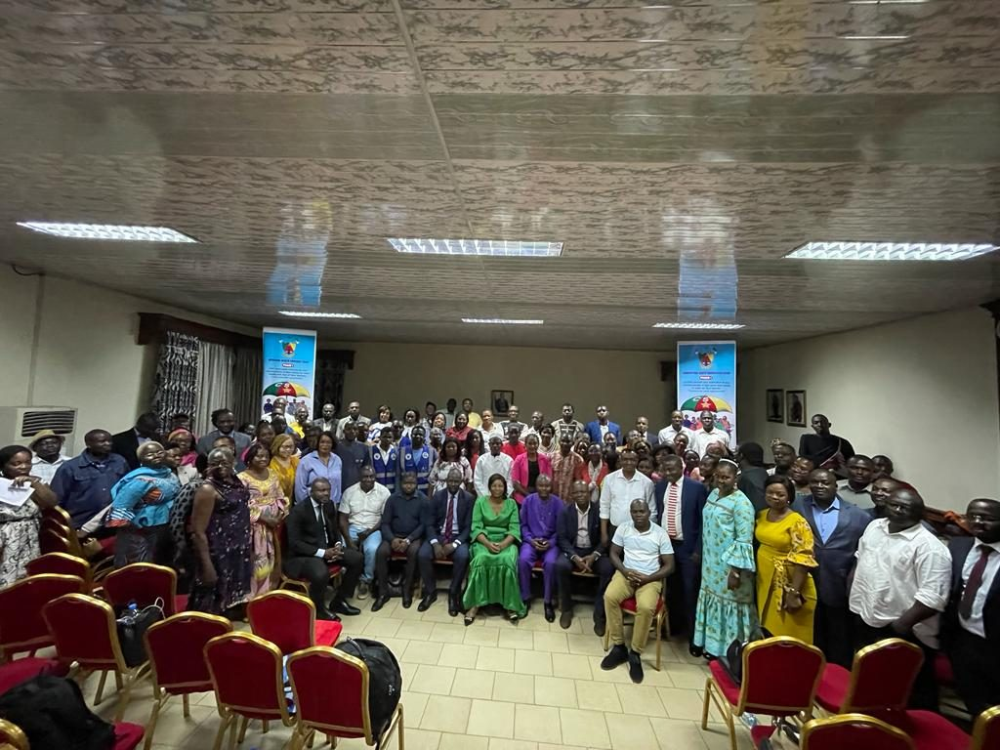
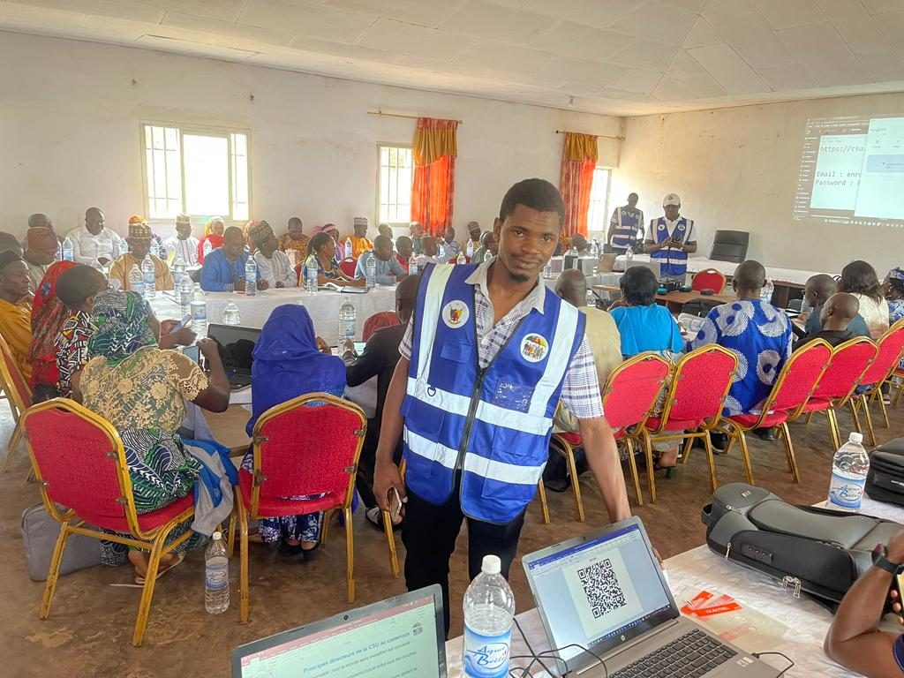
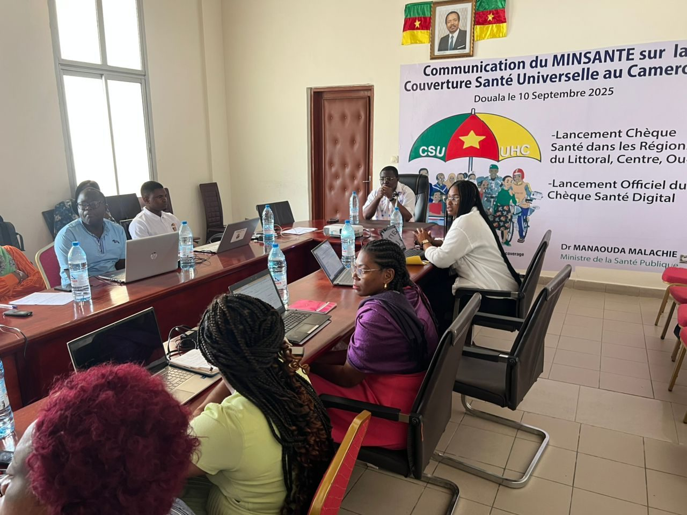
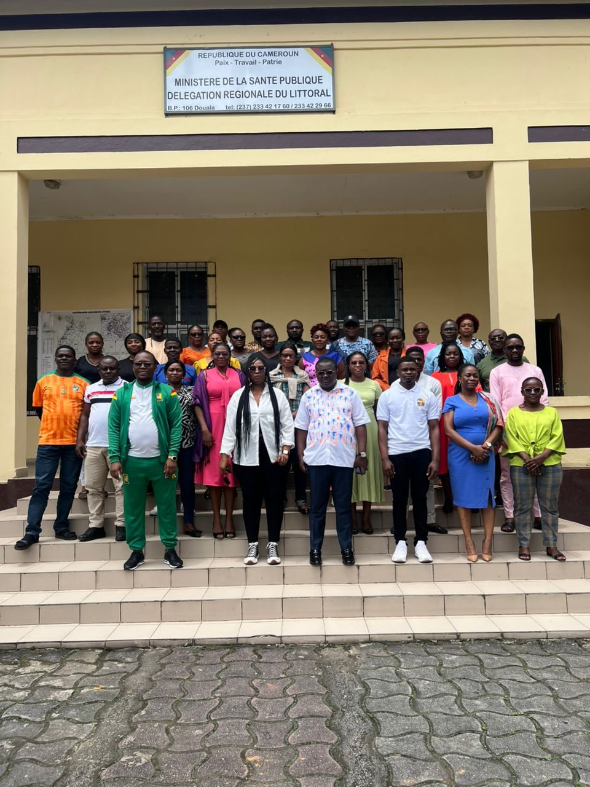

CARRIÈRES · COMMUNAUTÉ · INNOVATION
Construisons l’avenir, ensemble.
Chez PSE Consulting, nous faisons avancer la transformation numérique grâce au partage des connaissances, au travail d’équipe et à des idées concrètes.
Parlons de votre parcoursREJOIGNEZ L’ÉQUIPE
Opportunités d’emploi
Les postes actuellement ouverts chez PSE Consulting sont publiés ici.
Abonnez-vous pour recevoir une notification lorsqu’un nouveau poste est publié, même si cette page est fermée.
Chargement des opportunités…
SUR LE TERRAIN
Conférences et rencontres
Retrouvez les moments forts présentés sur notre page d’accueil : conférences, présentations et échanges avec nos partenaires.





VOTRE PROCHAINE ÉTAPE
Envie de faire partie de l’aventure ?
Présentez-vous et dites-nous ce que vous aimeriez construire avec PSE.
Nous contacter